Comparación de los modelos VQC y QSVC frente a baselines clásicos (SVM-RBF, MLP, KNN)
El aprendizaje automático cuántico (QML) busca aprovechar la superposición y el entrelazamiento para resolver problemas de clasificación y optimización con un costo computacional potencialmente menor.
En un dataset clásico de baja dimensionalidad como Iris, ¿los modelos cuánticos VQC y QSVC compiten ya con SVM, MLP y KNN?
Diseñar e implementar un modelo de aprendizaje automático basado en computación cuántica, evaluando su desempeño frente a métodos clásicos equivalentes.
Las amplitudes complejas α, β determinan la probabilidad de medir cada estado base. Con 4 qubits manejamos un espacio de 2⁴ = 16 dimensiones.
Las puertas RY, RZ permiten codificar datos como ángulos. La CNOT entrelaza dos qubits, capturando correlaciones.
Barren plateaus: ansatz demasiado profundos producen gradientes que se desvanecen exponencialmente, impidiendo el entrenamiento.
El VQC depende de un optimizador clásico que puede atascarse. El QSVC delega la decisión a un SVM probado. Veremos que esta distinción cambia drásticamente los resultados.
MinMaxScaler al rango [0, π] para codificación angular. One-hot encoding para VQC. Split estratificado 70 / 30 con semilla fija 42.
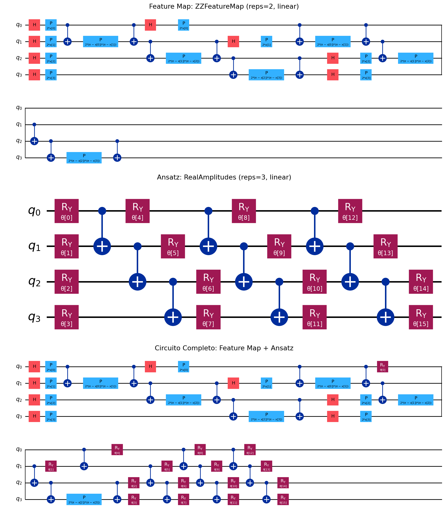
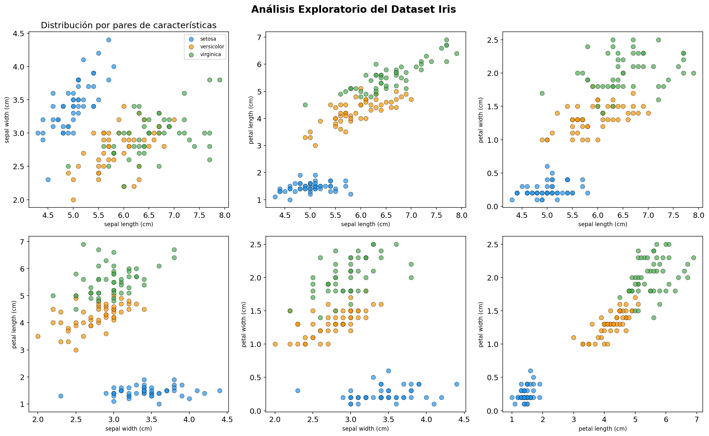
| Modelo | Accuracy | Precision | F1 | Tiempo (s) |
|---|---|---|---|---|
| SVM-RBF | 0.933 | 0.935 | 0.933 | 0.001 |
| MLP (16, 8) | 0.933 | 0.935 | 0.933 | 0.108 |
| KNN (k=5) | 0.933 | 0.944 | 0.933 | <0.001 |
El SVM-RBF en 5-fold CV se mantiene en 0.960 ± 0.039, confirmando que los baselines clásicos resuelven Iris en milisegundos con alta estabilidad. La pregunta es entonces: ¿pueden VQC y QSVC al menos aproximarse?
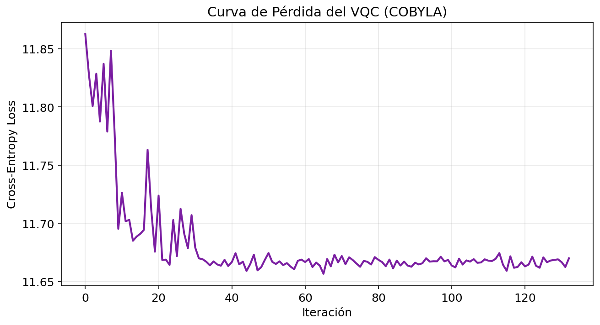
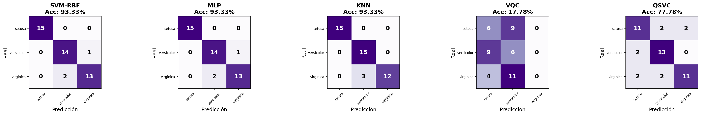
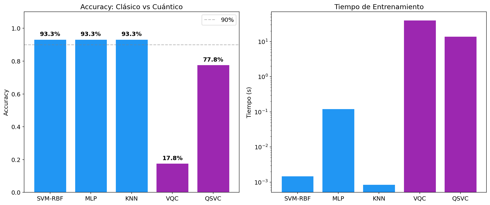
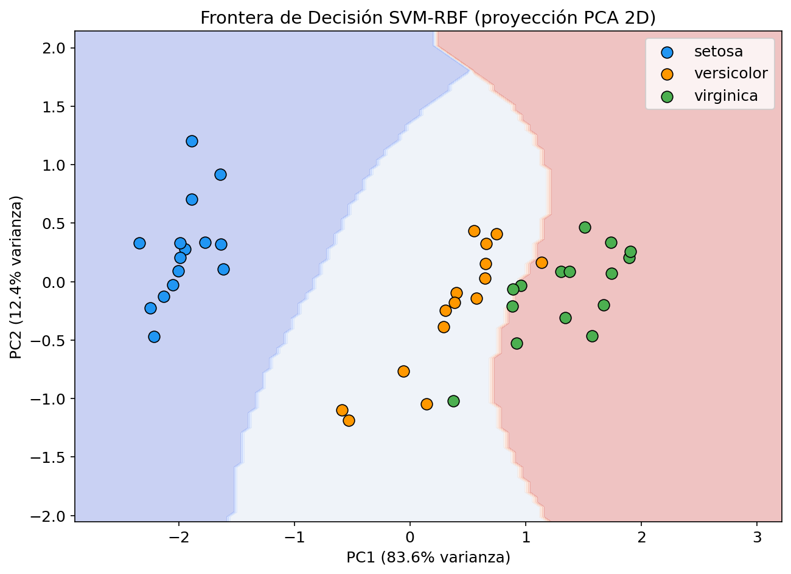
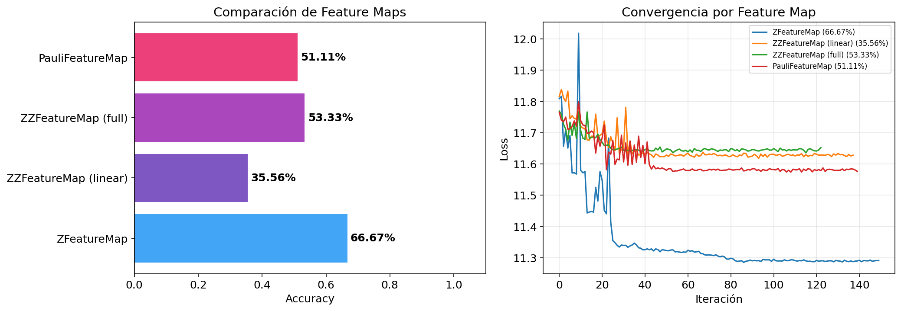
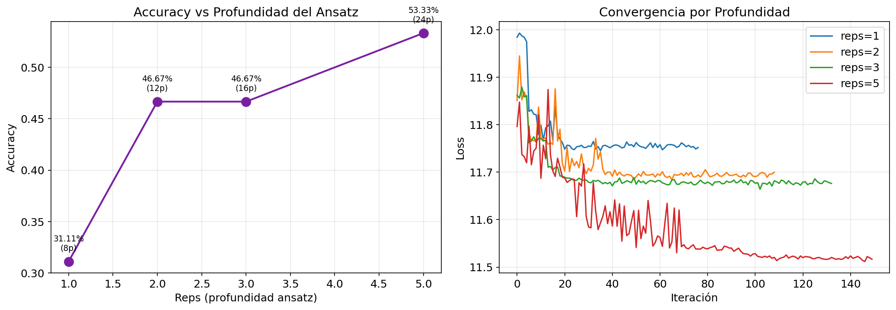
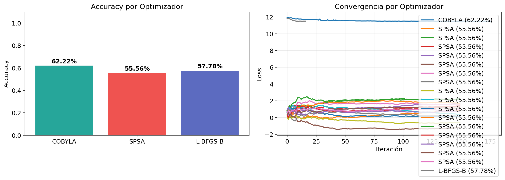
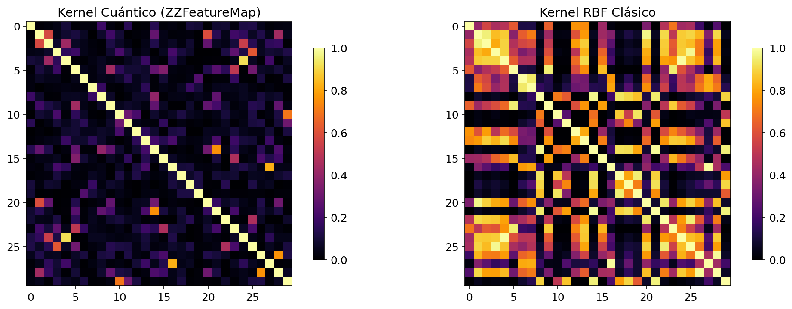
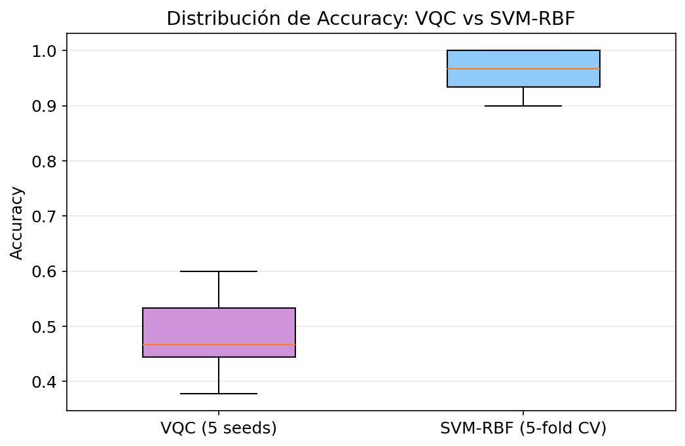
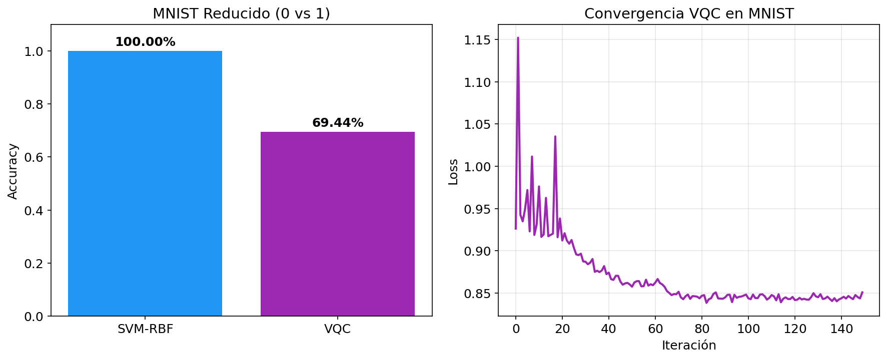
Simulación statevector (sin ruido NISQ real) · Iris y MNIST son datasets pequeños · No se exploraron ansatz adaptativos ni mitigación de errores · 150-200 iteraciones pueden quedar cortas.
Iris fue un campo de pruebas. La verdadera ventaja cuántica aparecerá cuando los datos vivan naturalmente en el espacio de Hilbert. El próximo dataset debe elegirse con esa pregunta en mente.
Preguntas, comentarios y discusión sobre los resultados, la metodología o los siguientes pasos.